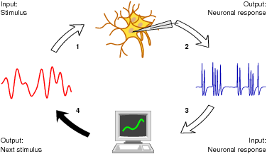
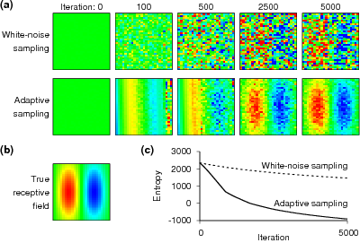
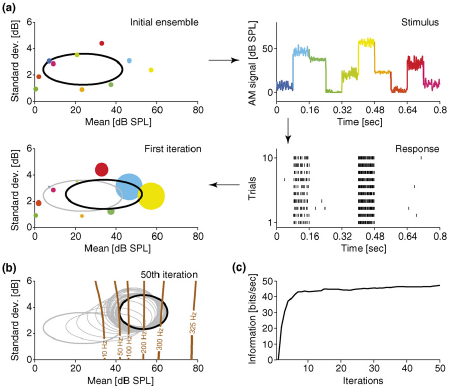
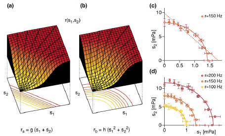

FeaturesThe relacs software platform offers the following main features: Closed-loop experimentsTraditionally, appropriate stimuli for probing a neuron are generated first. Then some days are spent doing experiments with the new stimuli. Afterwards the preliminary data are analyzed offline. Based on the findings the experimental protocol and the stimuli are modified and new experiments are conducted. relacs is designed as an framework for closed-loop experiments that may considerably speed up this traditional approach and in addition offers novel experimental possibilities. In an closed-loop experiment a stimulus is presented (1), the resulting response (2) is analyzed immediately (3), and properties of the next stimulus (4) (mean intensity, standard deviation, spectral content...) are adjusted as needed (see figure).

Closed-loop experiments and adaptive sampling. First, the
sensory system under investigation is presented with an
initial stimulus such as a sound wave or a color
image. Second, the neural system converts this input stimulus
into an output response--the membrane potential of a single
neuron, a multi-unit signal as measured in an extracellular
recording, a calcium or EEG signal and so on. Third, this
response is measured and recorded with a computer system. If
necessary, spikes are automatically detected and sorted
online. Following this data pre-processing, the neural
response is further analyzed according to the theoretical
framework underlying the specific experiment. Fourth, a new
stimulus is generated on the basis of the results of this
analysis thus closing the loop. Iterating this loop, stimuli
can be generated that reflect the particular response
characteristics of the studied system. From Benda et
al. 2007.
The closed-loop approach is beneficial on many levels, even for traditional experimental paradigms:
Closed-loop experiments, however, also offer new experimental designs:

Adaptive estimation of receptive fields, as demonstrated by a
numerical simulation study. (a) The top row shows how the
structure of a receptive field builds up gradually when a
standard neurophysiological approach is used. Here,
white-noise stimuli are presented and the receptive field is
estimated as the spike-triggered average. The bottom row shows
results from an adaptive sampling technique in which each new
stimulus is selected such that it maximizes the information
gained about the receptive field. (b) The true receptive
field. (c) The uncertainty of the estimates, quantified by the
entropy of the parameter distribution, drops far more rapidly
for the adaptive sampling technique than for white-noise
sampling (data provided by courtesy of J. Lewi).
From Benda et al. 2007,
as modified from Lewi J, Butera R, Paninski L: Real-time
adaptive information-theoretic optimization of
neurophysiology experiments. In Adv Neural Inf Process Syst,
Volume 19. Edited by Scholkopf B, Platt J, Hoffman
T. Cambridge, MA: MIT Press; 2007:857-864.

Iterative search for optimal stimulus ensembles (OSEs). (a) In
this analysis of an auditory receptor neuron, stimuli are sets
of ten 80 ms-long snippets of white-noise amplitude
modulations of a sine-wave carrier. Sample mean and standard
deviation (colored dots in top-left panel) are drawn from a
two-dimensional Gaussian distribution whose standard deviation
is represented by the black ellipse. The stimuli are played
repeatedly (top-right panel), resulting in spike-train
responses that vary slightly from trial to trial (bottom-right
panel). On the basis of the responses from several trials, the
contribution of each stimulus to the mutual information is
estimated; this contribution is depicted by the size of the
colored dots representing the individual snippets (bottom-left
panel). The contributions are taken as weight factors to
update the parameters of the Gaussian distribution that is
thus shifted toward the more important stimuli (new black
ellipse). The updated stimulus ensemble is then used to draw
new, additional test stimuli. (b) For a longer sample run with
multiple iterations, intermediate estimates of the OSE (grey)
rapidly converge to the final OSE (black). As shown by the
iso-firing-rate lines, the OSE is centered at the steepest
part of the tuning curve and triggers responses that cover
almost the full range of firing rates. As desired, the OSE is
thus indeed located in the most informative region in stimulus
space. (c) Accordingly, the information rate initially grows
rather fast with each iteration until it saturates after about
20 iterations.
From Benda et al. 2007,
as modified from Machens et al. 2005.

Discrimination of alternative response relations using the
Iso-Response Method. (a and b) A hypothetical two-dimensional
stimulus space is spanned by the variables s1 and s2. The
drawn surfaces represent the response r(s1,s2) for two
different models, which take the linear (a) and quadratic sum
(b) as the argument of a sigmoid non-linearity. Although the
two input-output scenarios are fundamentally
different, both produce exactly the same one-dimensional
response functions r(s1) and r(s2), respectively, as seen by
the black areas at the sides of the surface blocks.
Furthermore, any measurement along a radial direction, as is
common in physiological experiments, will produce similar
sigmoid response curves in both cases, as seen by the thick
black lines running along the surfaces. The iso-response
manifolds r=const (here: one-dimensional curves) below the
surface plots, however, give a clear signature of the
different underlying processes. (c) Iso-firing-rate curves for
an auditory neuron stimulated by superpositions of two pure
tones. The measured pairs of amplitudes s1 and s2
corresponding to a firing rate r of 150 Hz are shown together
with the iso-firing-rate curves for the two scenarios which
now correspond to sound-amplitude integration (a) and
sound-energy integration (b), respectively. The straight line
for the amplitude hypothesis deviates systematically from the
data, whereas the ellipse obtained from the energy hypothesis
provides an excellent fit. The different scales on the axes
reflect the strong frequency dependence of the neuron's sound
sensitivity. (d) As expected from the sound-energy model,
iso-response lines for different output firing rates are
scaled ellipses.
From Benda et al. 2007,
as modified from Gollisch et al. 2002.
See our review for more details. Integration of experiment and model simulationsBesides acquiring data from a real experiment, relacs can also run in a simulation mode, where the data are acquired from a model simulation. This is a very important feature, that sets relacs apart from many other data acquisition softwares:
Models can be implemented as a Model plugin for relacs. Hardware-independent experimental protocolsrelacs completely hides all specific hardware details behind the scenes. Therefore experimental protocols can be implemented independently of the hardware used at a particular experimental setup (data acquisition board, attenuator, temperature sensors, motorized micromanipulators). This allows to use the very same experimental protocols for all your different experimental setups in your lab, no matter what particular hardware is used. Furthermore, this offers the unique possibility to share experimental protocols with other labs. Multi-threaded designrelacs is fully multi-threaded, i.e. many different tasks run in parallel (the acquisition of the data, spike detection, data analysis and stimulus generation, GUI interaction). This way, relacs makes use of the computing power of multi-processor machines and therefore pushes the applicability of closed-loop algorithms to much larger data volumes, as they are acquired from multi-unit recordings, for example. Data-analysis libraryrelacs comes with an extensive set of data-analysis functions. The functions are implemented in C++ to allow fast and memory efficient data-analysis as it is required for closed-loop experiments.
New functions are added as required. Meta-dataVery important for enhancing the reusability of acquired data is their annotation with all sorts of meta-data that specify the context of the experiment. Upon completion of a recording, relacs immediately forces the experimenter to provide this important information through a freely configurable dialog. In addition, for each recording all configuration files, log files, and version numbers and settings of the experimental protocols are saved as well. Free softwarerelacs is distributed as free software ("free" as in "free speech") under the GNU General Public License (GPL).
|